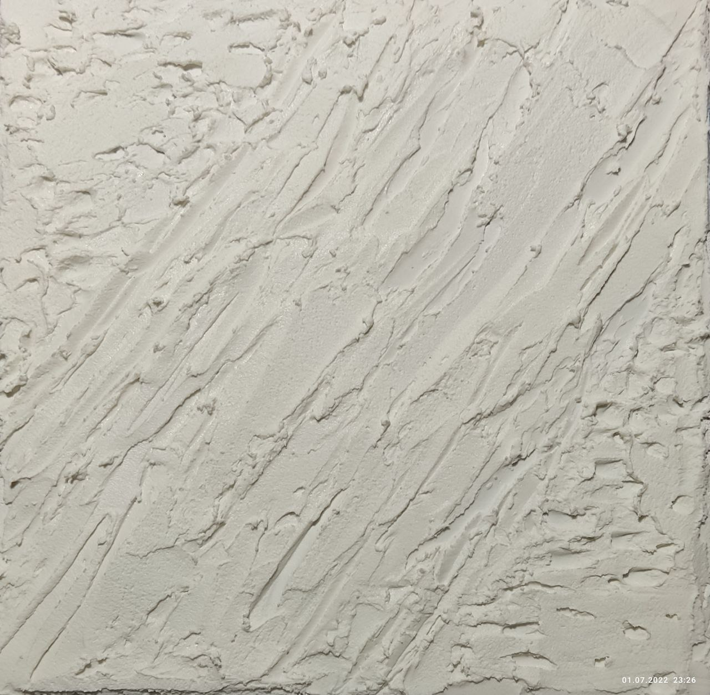
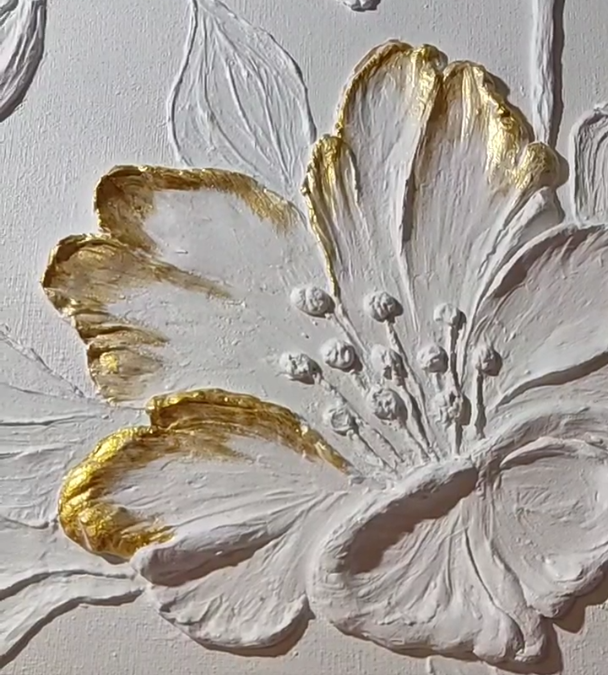

Главная
Портфолио
Обо мне
Связаться со мной
Главная
Портфолио
Обо мне
Связаться со мной
Патикина Наталья
Главная
Обо мне
Портфолио
Связаться со мной
Telegram
Vkontakte
Процесс создания картины
Сначала на холсте создается объемная фактура из текстурной пасты

Далее, картина сушится и покрывается грунтом

Наносятся акриловые краски и сверху покрытие лаком для защиты
В каждую картину вкладывается настроение, энергия и смысл
🠕